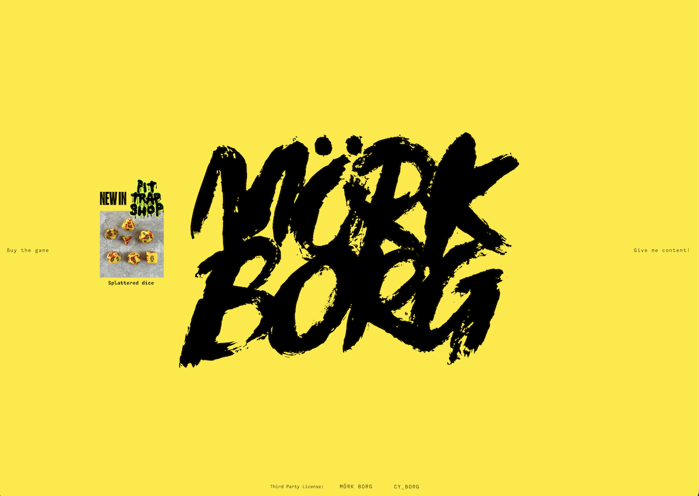
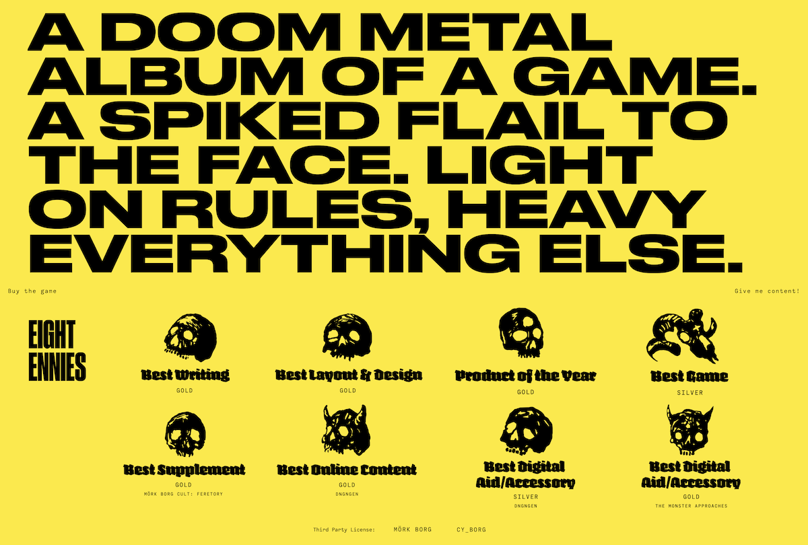
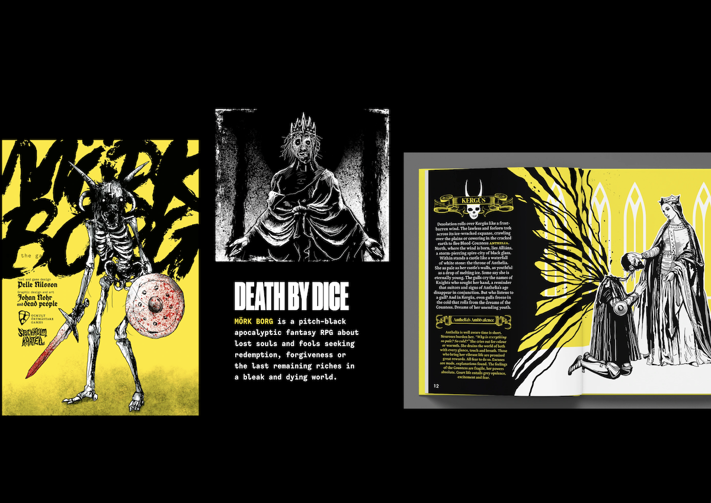
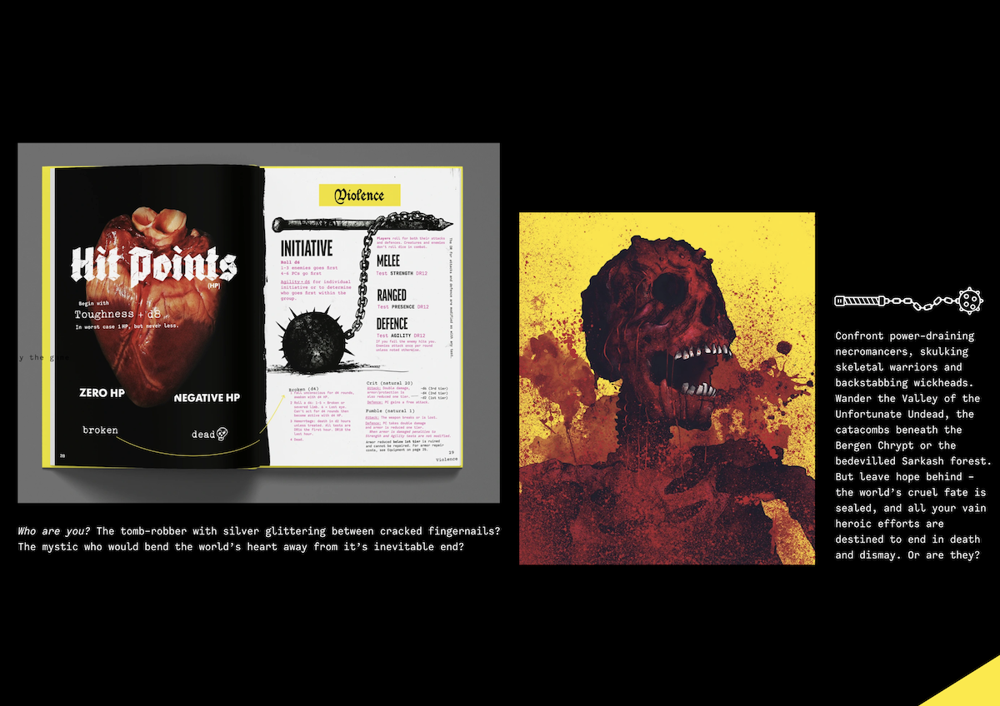
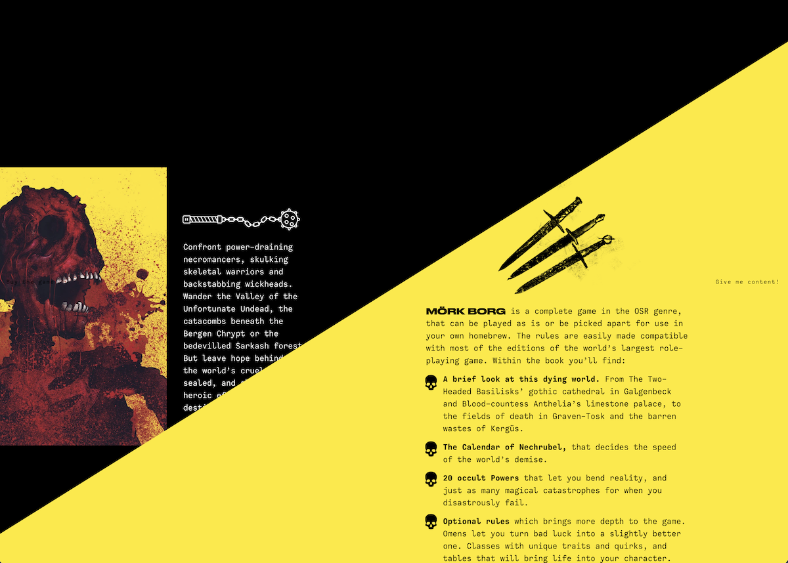
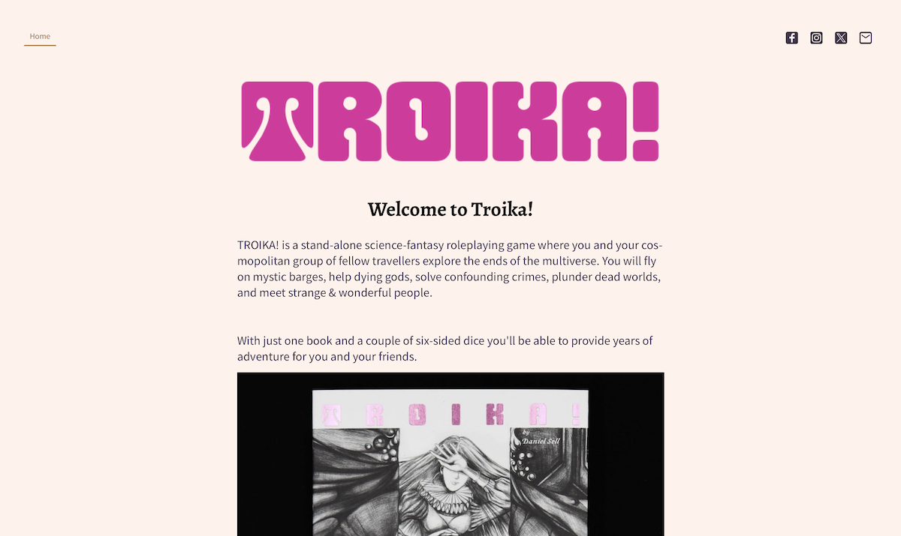
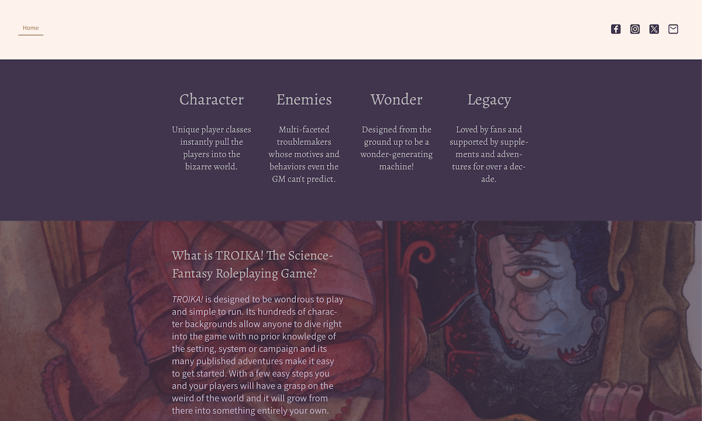
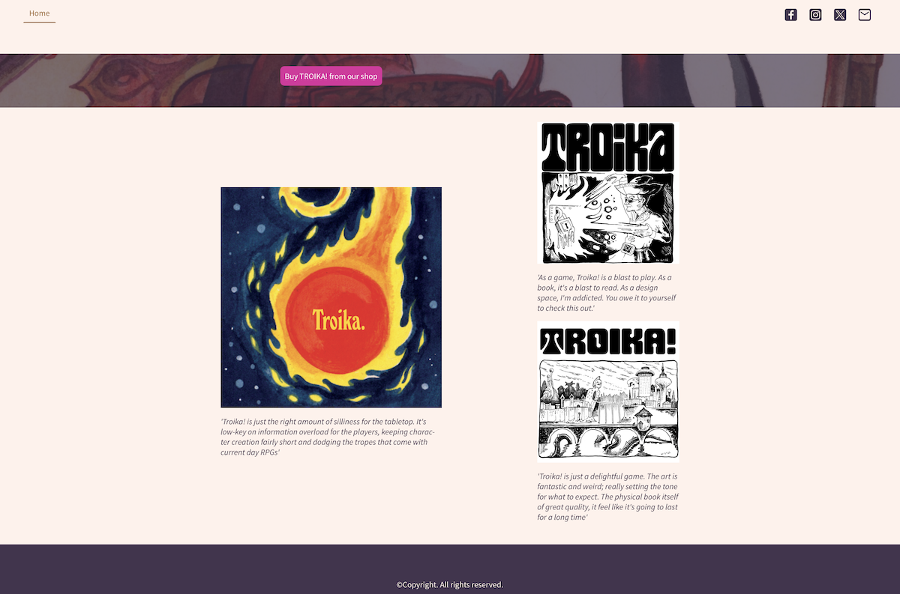

Two of the most interesting games to emerge on the tabletop roleplaying game (ttrpg) scene are Mörk Borg, known for its rather intense aesthetics, and TROIKA!, notable for its fantastic writing.
Mörk Borg is chaos imprinted onto the page. The visual style for this game, and the Mörk Borg website involves some fantastic re-purposing of public domain art. Mörk Borg pairs this punk aesthetic with striking typography choices. The words “Mörk Borg” are a painted black scrawl across the top of the website, the Eclipse typeface popping against the neon yellow background. They take it one step further by adding an animation to the words, which jump out towards the reader. This is the first thing the visitor is greeted with, and it leaves an impression.

They follow this up with an oversized and sloganized description of what Mörk Borg is. “A DOOM METAL ALBUM OF A GAME. A SPIKED FLAIL TO THE FACE. LIGHT ON RULES, HEAVY ON EVERYTHING ELSE.” This is immediately followed by hand-drawn skull iconography and use of a typeface (Adhesive Nr. Seven) that evokes a look and feel from yesteryear.

As if this weren’t all slick enough, Mörk Borg’s site is designed so, from the user’s perspective, all that’s needed to navigate is to scroll through multiple pages. No clicking, just scroll. Some pages scroll normally, others are side-scrolling, but the overall feel is quite seamless.



Every element of the official website is drawn from the books themselves. The Mörk Borg site contains a tremendous amount of information and uses many typefaces but, paradoxically, what could have been a chaotic mess is actually very clearly navigable. The viewer is wowed, not (necessarily) overwhelmed.
Typefaces used for large blocks of text include the following: Alegreya, Bahnschrift, Burvetica NC, Calling Code, Courier Prime, Inconsolata, JSL Ancient, Old Newspaper Types.
Typefaces used for headings include: Adhesive Nr. Seven, Blackletter HPLHS, Chomsky, Gothicus, Mon Amour Fraktur Broken, Old Englished boots, JSL Blackletter, Fakir Display, Mohica, Fette Trump-Deutsch, and Lux Contra Tenebras.
That’s quite a list.
The website for TROIKA! is very different from Mörk Borg. Melsonian Arts Council, the company behind TROIKA!, offer a shockingly barebones website for such an imaginative game.

There’s limited exploration of typography on the TROIKA! website, but what they’ve gone with serves its purpose - to give a reader the broad strokes of what the game is. The TROIKA! logo is a custom logotype, which looks like something that would’ve appeared on a psychedelic album cover from the 1970s. The letters are rendered in an inviting, soft pink color, with an aesthetic like they’ve been smoothly carved out of rounded-corner squares. Bold headings are in the Aleygra (serif) typeface - one of the typefaces found in Mörk Borg. The body text used throughout the website is a sans serif typeface, Source Sans Pro.


Perhaps it’s not a fair comparison, to have TROIKA! face off against Mörk Borg. The latter is created by two people (aided by a small group of collaborators) and is clearly better-funded - whereas TROIKA! is primarily the brainchild of one person, who occasionally collaborates with freelancers to publish books.
Unfortunately, he may not be collaborating with anyone who can build a better website for TROIKA!. This is a shame because a small, even micro, tabletop roleplaying game publisher really needs to lean on their website to reach out to a potential audience. While TROIKA! as a product is fantastic in terms of writing and memorable in terms of illustrations - quite frankly it’s just brimming with weirdness - this is not well-reflected in the game’s web presence.
(Beyond the issues already mentioned, there is also inconsistency in the site copy, with the game sometimes being written as “Troika!” and other times “TROIKA!”.)
When comparing each game’s respective website, Mörk Borg’s site truly engages the viewer with a visceral, neon-drenched experience. In doing so, the Mörk Borg website presents an excellent representation of what the game itself is like. In stark contrast to the Mörk Borg website, TROIKA!’s brief description of their game and lukewarm aesthetics of the website don’t hook a visitor nearly as well as Mörk Borg does. Indeed, most visitors to the TROIKA! website won’t find what they’re looking for.
Of these competing titles, Mörk Borg has the better website and more effective use of typography by far. Mörk Borg’s website really is the gold standard for what a tabletop roleplaying game’s site should look like. The TROIKA! website, on the other hand, does a disservice to its visitors.